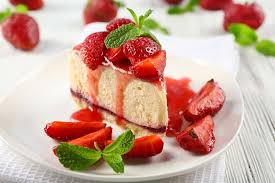

Os doces mais famosos do mundo: veja 4 receitas típicas
Adora a hora da sobremesa? Então não perca essa lista
com base no TudoGostoso! Saiba mais sobre os doces mais
famosos do mundo e confira essas maravilhas.
Todo mundo sabe que uma das paixões mundiais são as receitas doces. É difícil achar alguém que não goste ou recuse uma sobremesa ou um prato doce supergostoso, né? E para provar, a gente separou algumas delícias que fazem sucesso pelo mundo inteiro! Confira os doces mais famosos do mundo e saiba mais sobre essas maravilhas.

Os doces mais famosos do mundo: veja 4 receitas típicas
Brigadeiro
Começando nossa lista com um doce genuinamente brasileiro! O brigadeiro é uma receita típica do nosso país, mas sua fama é internacional. Feito com leite condensado, manteiga e chocolate, a sua primeira versão possuía ovos e leite. Ele foi criado na época da segunda guerra mundial, com o intuito de divulgar uma campanha política.
Churro
Também muito conhecido e consumido no Brasil, o churro é uma receita típica da Espanha. Esse doce é preparado no café da manhã, almoço, lanche e até mesmo no janta. Vendido por todos os lugares, principalmente nas ruas, o churro é uma paixão nacional. Feito com uma massa bem prática e servido com açúcar, canela e um pouco de doce de leite.
Tiramisu
O tiramissu é uma receita de doce maravilhosa, e seu sabor é tão bom quanto seu visual. Ovos, conhaque, queijo e rum fazem parte da sua lista de ingredientes. É uma sobremesa criada e degustada na Itália, mas podemos encontrá-la por diversos lugares no mundo, inclusive no Brasil. Seu aspecto lembra muito um pavê, só que mais delicado e complexo.
Com uma textura firme por fora e um creme delicioso por dentro: o Crème brûlée é um doce incrível. Esse prato nasceu na França, e é vendido por várias padarias e confeitarias por todo o país. Feito de uma forma até simples, juntando ovos, baunilha e creme de leite, servido com uma camada de caramelo por cima. Camada essa que, normalmente, é finalizada de maneira graciosa com um maçarico de cozinha.